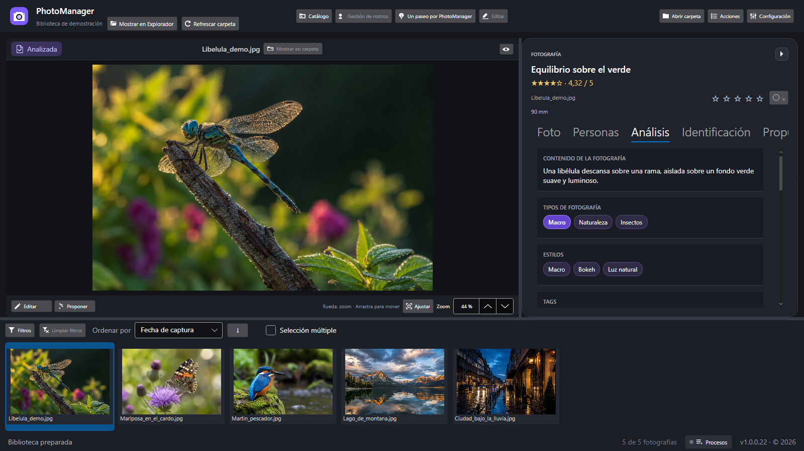
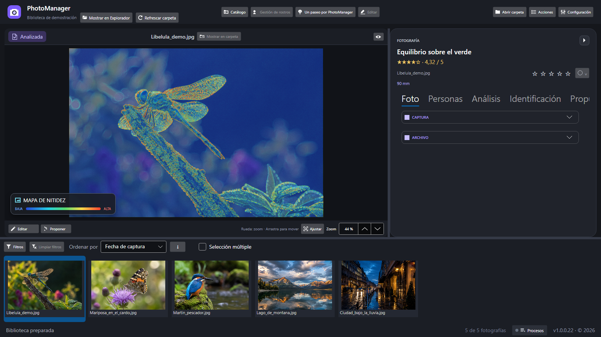
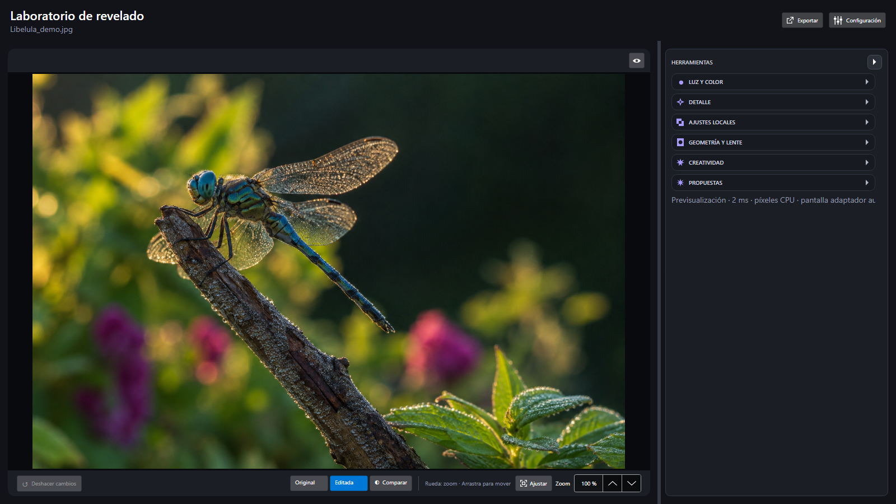

Observador visual
VisualAnalyzerDescriu el subjecte, l’entorn, l’acció, la llum, els colors i l’atmosfera a partir del que és visible.
Què està passant en aquesta imatge?
APRÈN AMB LES TEVES PRÒPIES FOTOGRAFIES.
Descobreix què explica una imatge, com funcionen la llum i la composició i què pots millorar. Comprèn la imatge amb agents especialitzats i rep propostes de retoc que expliquen què canviar, per què i com comprovar-ho.
Windows 10 i 11 · 64 bits · Aplicació d’escriptori
Última versió: 1.0.0.23 · Historial de versions
Els noms dels controls de l’aplicació es mostren en castellà perquè els puguis trobar.
CATÀLEG
El Catàleg és el punt de partida: explora les carpetes i decideix amb quines fotografies vols treballar.
Consulta les mètriques de la col·lecció i fixa les carpetes que utilitzes habitualment per tenir-les sempre a mà.
«Ver contenido» explora una carpeta dins del Catàleg; «Abrir miniaturas» la porta a la consulta principal.
Si la carpeta encara no està indexada, el progrés per fases t’informa del que està passant.
Carpetes fixades
CRONOLOGIA
Situa cada fotografia en el seu moment i torna a trobar-la sense perdre el fil de la col·lecció.
Explora grups d’anys i mesos que pots desplegar o contreure. Ajusta la densitat de les miniatures i filtra per nom, format, estat, estrelles o color.
Obre una fotografia i torna a la mateixa posició: es conserven la selecció, l’ordre, els grups i el desplaçament.
2026
Juny
2025
ROSTRES
Reuneix les imatges d’una mateixa persona i converteix una biblioteca de fitxers en històries que pots reconèixer.
Cerca persones, revisa les coincidències pendents i consulta les fotografies associades a cadascuna.
Organitza persones amb etiquetes globals de noms i colors. Assigna etiquetes existents des de les propietats i administra-les a «Gestionar etiquetas».
Persones
Família · Viatges
Natura
UNA IMATGE. MOLTES PREGUNTES.
Aprendre comença per observar. Explora quatre maneres de llegir una mateixa fotografia.
EXEMPLE EXPLICATIU
Lectura editorial d’aquesta imatge, no un resultat generat en directe per la IA.
L’anàlisi amb OpenAI requereix una clau d’API i genera consum. S’envia una còpia de la fotografia; les valoracions són orientatives. Inspeccionar l’original t’ajuda a contrastar-les.
UNA ANÀLISI AMB PERSPECTIVES DIFERENTS
Cada agent té una tasca concreta. Les seves observacions t’ajuden a comprendre el contingut i les decisions fotogràfiques.
01 / OBSERVAR LA IMATGE Quatre agents examinen la fotografia
VisualAnalyzerDescriu el subjecte, l’entorn, l’acció, la llum, els colors i l’atmosfera a partir del que és visible.
Què està passant en aquesta imatge?
TechnicalCriticExamina l’enfocament, l’exposició, el soroll i la profunditat de camp. Fonamenta les observacions i té en compte les decisions creatives.
Com contribueix la tècnica al resultat?
CompositionCriticAnalitza l’enquadrament, l’equilibri, el fons, les distraccions i la narrativa visual, sense imposar regles mecàniques.
Com s’organitza el que estàs veient?
PhotoClassifierIdentifica el gènere principal, altres gèneres i estils observables per situar la fotografia en el seu context.
Quin llenguatge fotogràfic utilitza?
02 / DONAR SENTIT ALS RESULTATS Dos agents treballen amb les observacions anteriors
MetadataCuratorProposa un títol i etiquetes relacionats amb el subjecte, l’entorn i l’atmosfera. Aquesta lectura també t’ajuda a trobar la imatge després.
PhotoJudgeExplica la valoració amb els punts forts i les limitacions de les crítiques tècnica i compositiva. L’aplicació calcula la puntuació i les estrelles.
L’explicació és el punt de partida per aprendre. La puntuació és una referència complementària, no una mesura absoluta del valor d’una fotografia.
DE L’OBSERVACIÓ A LA PRÀCTICA
Relaciona el que diu l’anàlisi amb el que pots observar i provar per tu mateix.
Obre una carpeta, recorre les imatges i consulta’n les metadades. Comença amb una fotografia que et desperti curiositat.
Sol·licita l’anàlisi i revisa què identifica, com interpreta la composició i en què basa les observacions.
Utilitza la lupa, el focus peaking, el mapa de nitidesa, la màscara d’exposició, l’histograma i les guies de composició per examinar la imatge.
Revisa propostes d’edició, decideix quins ajustos vols aplicar i compara l’abans i el després per entendre’n l’efecte.

CONTRASTA EL QUE ET DIU LA IA
Explora el focus, les llums i la distribució del detall amb les eines de diagnòstic. Els seus mapes són ajudes per a l’observació.

DEL CONTINGUT A CADA AJUST
Una proposta útil explica què canviar, per què i què observar després. Tu conserves la decisió sobre el resultat.

Tria un acabat natural professional, documental, cinematogràfic, en blanc i negre o un altre dels perfils disponibles.
Els agents d’OpenAI tenen en compte la imatge, l’anàlisi, les metadades disponibles, l’histograma i els ajustos actuals.
Consulta l’ajust, la seva prioritat, la zona afectada i l’efecte visual que es busca.
Revisa què has de comprovar i quan convé reduir o retirar cada ajust. Previsualitza abans d’exportar.
DOS AGENTS COMPLEMENTARIS PER PROPOSTA
PhotoManagerTechnicalEditor revisa la base tècnica. Al seu costat treballa un especialista seleccionat automàticament segons el contingut de l’anàlisi.
PhotoManagerMacroEditorDetall del subjecte, textures i protecció del fons desenfocat.
PhotoManagerWildlifeEditorPlomatge, pelatge, ulls i separació de l’animal.
PhotoManagerPortraitEditorTons de pell, textura, mirada i expressió.
PhotoManagerLandscapeEditorProfunditat, plans, rang tonal i atmosfera.
PhotoManagerArchitectureEditorTractament adaptat a edificis i interiors.
PhotoManagerProductEditorTractament de producte i natura morta.
PhotoManagerGeneralEditorPer a imatges que no encaixen en les altres especialitats.
COM LLEGIR UNA RECOMANACIÓ
Exemple editorial de retoc macro. No representa una proposta executada ni un resultat abans/després.
Si el detall de l’insecte necessita més presència, valora un ajust limitat al subjecte per conservar el bokeh del fons.
Compara els ulls i les ales al 100 %. Observa també les vores i el fons per detectar halos o textura artificial.
Redueix o retira l’ajust si endureix la imatge. Per a un ajust local, assenyala la zona i revisa la màscara assistida.
L’ANÀLISI, AL TEU FLUX DE TREBALL
Les recomanacions s’adapten a les eines de destinació. Actualment, Luminar Neo és l’única solució externa compatible.
Revisa i aplica ajustos compatibles al Laboratori de revelatge. Les propostes d’OpenAI poden incloure retall i ajustos locals; aquests últims requereixen assenyalar la zona i revisar-ne la màscara.
La IA local també analitza la fotografia i proposa ajustos globals per a aquest editor.
Compara les modalitats d’IARep recomanacions amb OpenAI per aplicar a les seves eines. Inclouen el motiu, l’ajust de partida i com comprovar-lo; no equivalen a aplicar automàticament el pla.
LuminarTechnicalAdvisor: revelatge tonal i detall.
LuminarCreativeAdvisor: enquadrament, color i acabat.
Luminar Neo s’adquireix i s’instal·la per separat.
DUES MANERES DE TREBALLAR AMB IA
Pots analitzar visualment una fotografia al teu equip o utilitzar OpenAI. Cada modalitat té un abast diferent.
Ollama i un model visual interpreten la fotografia per proposar retocs globals a PhotoManager. La imatge es processa localment i no consumeix una API externa.
PhotoManagerLocalVisionCombina interpretació visual amb mesures locals de llum, color, soroll i detall.
Requereix instal·lar Ollama, descarregar un model compatible i disposar de memòria i emmagatzematge suficients. El rendiment depèn del teu equip.
La seva anàlisi està orientada al retoc; no genera l’informe complet dels sis agents d’OpenAI.
Utilitza la teva clau i el teu compte d’API per a l’anàlisi amb sis agents, les propostes d’edició i les identificacions sol·licitades per separat.
Ofereix propostes per a PhotoManager i recomanacions per a Luminar Neo. Les operacions visuals envien una còpia de la imatge al servei.
El cost depèn del model i del consum. PhotoManager mostra el consum registrat i les estimacions disponibles; la facturació es consulta a OpenAI.
Com activar OpenAI| Funció | IA local | OpenAI |
|---|---|---|
| Anàlisi visual per al retoc | Sí, ajustos globals | Sí, amb agents especialitzats |
| Informe de sis agents | No | Sí |
| Destinació de les propostes | PhotoManager | PhotoManager i Luminar Neo |
| Cost d’API | Sense cost d’API externa | Segons l’ús i el model |
| Preparació | Ollama i model visual local | Clau i facturació d’API |
COMENÇA PAS A PAS
La clau es crea; el que pagues és el consum de l’API. No cal comprar una subscripció a ChatGPT per seguir aquesta guia.
Inicia sessió o crea un compte a la plataforma d’OpenAI. Comprova que ets a l’organització i al projecte que vols utilitzar.
Obre Facturació, afegeix un mètode de pagament i segueix les instruccions per comprar saldo quan correspongui. Revisa l’import, les condicions i la recàrrega automàtica abans de confirmar. Pots desactivar les recàrregues si prefereixes comprar saldo manualment.
Consulta la guia oficial de facturació prepagada. El saldo no s’ha de considerar un límit instantani de despesa.
A API keys, crea una nova clau secreta, posa-li un nom com ara PhotoManager i desa-la de manera segura. No la comparteixis ni la publiquis. La guia oficial d’inici explica com crear i protegir les claus.
Obre Configuración → API a l’aplicació i introdueix-hi la clau. «Configuración» és al peu de les pantalles principals, al costat de «Procesos». No introdueixis la clau en aquesta web. Revisa el model seleccionat per als agents.
Sol·licita una anàlisi des de les accions de la fotografia. Revisa el consum registrat a PhotoManager i contrasta’l amb el tauler d’ús d’OpenAI. Consulta els preus vigents de l’API abans d’analitzar lots grans.
ChatGPT i l’API es facturen per separat. Una subscripció a ChatGPT no inclou automàticament el consum d’API de PhotoManager. Consulta l’explicació oficial.
Instruccions contrastades amb la documentació oficial el 30 de setembre de 2026. Els noms de les opcions poden canviar.
Prefereixes treballar sense clau ni cost d’API? Configura la IA local per analitzar imatges i obtenir propostes de retoc al teu equip.
LA CURIOSITAT CONTINUA
Sol·licita per separat una identificació d’insectes, flora o fongs. Explora trets observats, alternatives i confiança per continuar investigant.
InsectIdentifierObserva els trets visibles de l’insecte i consulta una possible identificació.
FloraIdentifierExplora indicis a les flors, les fulles i altres parts visibles de la planta.
FungusIdentifierRevisa característiques visibles i les limitacions de la identificació fotogràfica.
La identificació és orientativa. No permet determinar si una espècie és comestible o segura per al consum.
TOT AL VOLTANT DE LA TEVA FOTOGRAFIA
Organitza, recupera i edita les imatges en un mateix espai de treball.
Les imatges RAW es carreguen progressivament, des de la vista prèvia fins al revelatge complet, amb precàrrega de les fotografies adjacents.
L’editor desa els ajustos en una recepta PME i els conserva en canviar de fotografia. Les miniatures reflecteixen l’edició i el selector «Original / Editada» permet comparar. Treballa llum, color, corbes i màscares i exporta en JPEG, PNG o TIFF.
Explora perfils i propostes d’edició o utilitza art generatiu local amb ComfyUI i els seus models, que requereixen preparació addicional.
Obre «Ayuda» a cada pantalla per iniciar-ne la visita guiada. Fotografies, persones i receptes de demostració permeten aprendre els controls conservant la sessió.
Consulta tasques en curs, recuperades o bloquejades a «Procesos». Les tasques pendents compatibles es reprenen en reiniciar i les anàlisis continuen en canviar de carpeta. «Configuración» és al costat, al peu comú.
LA TEVA PROPERA MIRADA COMENÇA AQUÍ
PhotoManager per a Windows 10 i 11 de 64 bits.
L’instal·lador inclou l’entorn .NET necessari.
PhotoManager 1.0.0.23 disponible per descarregar.
Descarrega per a WindowsInstal·lador per a Windows · EXE
La versió 1.0.0.23 no té signatura digital. El navegador o Windows poden mostrar advertiments en descarregar-la o obrir-la.
Com descarregar i instal·larHistorial de versions · Canvis de la 1.0.0.23Instal·ladors a GitHubINSTAL·LACIÓ AL WINDOWS
Guia per a la versió 1.0.0.23. Comprova sempre l’origen de l’instal·lador abans de continuar.
La manca de signatura no demostra que un fitxer sigui segur. Si l’antivirus detecta programari maliciós, l’origen no coincideix o l’avís és diferent, cancel·la i consulta abans de continuar. No desactivis l’antivirus, l’SmartScreen ni l’Smart App Control. Si no hi ha l’opció de continuar, pot haver-hi un bloqueig de l’Smart App Control o una política de l’equip: contacta amb l’administrador o amb nosaltres.
Demanar ajuda amb la instal·lacióFes servir el botó de descàrrega d’aquesta pàgina o obre la versió oficial a GitHub. A «Assets», tria l’instal·lador EXE, no els fitxers «Source code».
Obrir la versió 1.0.0.23 a GitHubSi el navegador indica que el fitxer no es descarrega habitualment, comprova que prové de GTREPAT/PhotoManager.Downloads a github.com. Només si confies en aquest origen, utilitza «Conserva» si està disponible. Les opcions varien segons el navegador. Si detecta una amenaça, no conservis ni executis el fitxer.
Quan acabi la descàrrega, obre la carpeta Baixades, o la ubicació que hagis triat, i localitza aquest fitxer. Comprova’n l’origen i analitza’l amb l’antivirus abans d’obrir-lo amb un doble clic.
PhotoManager-Setup-1.0.0.23.exeSi l’avís diu que el Windows ha protegit l’ordinador i es refereix a una aplicació no reconeguda, selecciona «Més informació». Només després de verificar l’origen i decidir que confies en l’instal·lador, selecciona «Executa de totes maneres», si està disponible. Pot aparèixer un editor desconegut perquè aquesta versió no està signada.
Només si verifiques l’origen i confies en l’instal·lador.
Revisa les opcions de l’instal·lador i segueix-ne les indicacions. El PhotoManager s’instal·la per al teu usuari, sense permisos d’administrador: no cal triar «Executa com a administrador». Si apareix una sol·licitud inesperada d’elevació, cancel·la i consulta. Per actualitzar, tanca el PhotoManager abans d’executar l’instal·lador. Quan acabi, obre el PhotoManager des del menú Inici.
Informació de Microsoft: Avisos de l’SmartScreen · Bloquejos de l’Smart App Control
ABANS DE COMENÇAR
Ofereix una lectura orientativa amb observacions i arguments. Es pot equivocar i no substitueix el teu criteri. Examina una còpia reduïda, de manera que no equival a inspeccionar l’original al 100 %.
Configura la clau a «Configuración > API» i sol·licita l’anàlisi des de les accions de la fotografia. Utilitza el teu compte d’OpenAI i genera consum d’API; pots consultar el consum registrat a l’aplicació. Consulta la guia de clau i facturació.
JPEG, PNG, WebP, TIFF i BMP, a més de formats RAW com DNG, CR2/CR3, NEF, ARW, RAF, ORF, RW2 i PEF. La compatibilitat RAW depèn de la càmera i de la compressió. HEIC/HEIF no té suport fiable actualment.
No. Pots explorar fotografies, organitzar carpetes, consultar metadades, assignar estrelles i colors i editar sense una clau d’OpenAI. També pots recórrer la galeria del Catàleg i les seves visites demo. Els filtres basats en gèneres i etiquetes de l’anàlisi requereixen resultats desats.
Incorpora la galeria integrada de Catàleg, el tauler de Rostres, etiquetes globals, miniatures editades, càrrega RAW progressiva, visites amb dades demo i recuperació de processos. Consulta totes les novetats.
No. Indexar incorpora les fotografies i les seves dades al catàleg local. «Ver contenido» ho pot fer automàticament si la carpeta encara no està indexada i mostra el progrés de cada fase. L’anàlisi amb OpenAI se sol·licita per separat.
No. «Quitar del catálogo» demana confirmació i elimina el registre i els índexs, conservant les fotos i els fitxers PME. «Renombrar», en canvi, canvia el nom de la carpeta física i n’actualitza les rutes.
«Ayuda» és a les capçaleres de Miniatures, Catàleg, Ver contenido, Rostres i Editor. Les visites utilitzen exemples i es poden tancar amb Escape. «Procesos» i «Configuración» són al peu comú; hi pots revisar l’activitat, els errors i les tasques recuperades.
Les tasques pendents compatibles es desen i es recuperen en tornar a obrir. Una unitat desconnectada o un servei no disponible pot deixar una tasca bloquejada. Les operacions pendents de Paperera necessiten una nova confirmació abans de continuar.
La visualització i la lectura de metadades es fan localment. Quan sol·licites una anàlisi amb OpenAI, s’envia una còpia de la imatge al servei. Les funcions locals amb Ollama i ComfyUI processen la fotografia al teu equip quan estan configurades amb motors locals.
El visor obre els originals en mode de lectura. L’anàlisi es desa en un JSON i l’editor conserva els ajustos en una recepta PME al costat de la fotografia. Les miniatures poden reflectir aquesta recepta i la consulta permet alternar «Original / Editada». Exportar crea la imatge amb els ajustos aplicats.
Descarrega i executa l’instal·lador. S’instal·la per al teu usuari, sense permisos d’administrador. Per actualitzar, tanca PhotoManager i executa l’instal·lador nou. Els instal·ladors sense signatura poden mostrar un avís de Windows.
No. Luminar Neo és una aplicació independent. Ollama, ComfyUI i els seus models requereixen preparació addicional; PhotoManager inclou opcions per ajudar-te a configurar-los.
CONSTRUÏM UN PHOTOMANAGER MILLOR
Les teves idees ajuden a millorar PhotoManager. Has trobat un problema, trobes a faltar alguna funció o vols compartir l’experiència? Escriu-me.
Els botons obren l’aplicació de correu amb un esborrany preparat. Tu revises i envies el missatge. Si no tens cap aplicació configurada, copia l’adreça i escriu des del teu correu habitual.